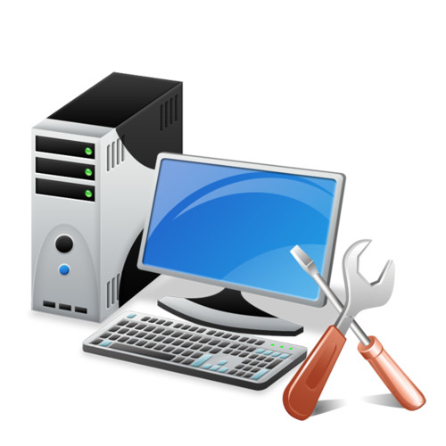
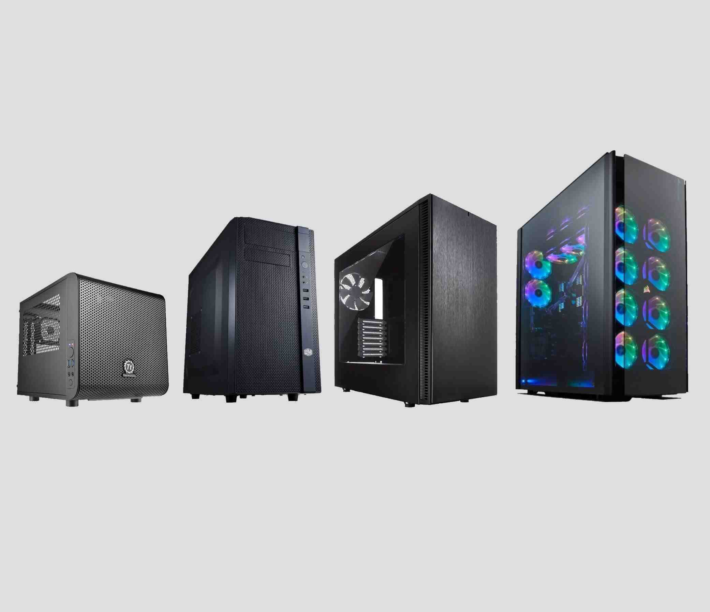
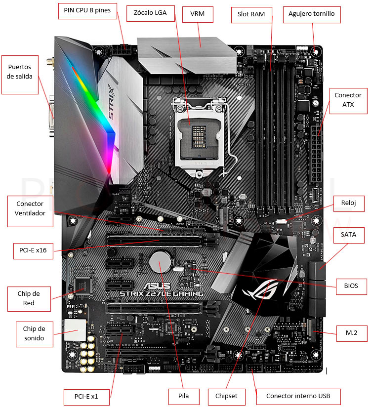
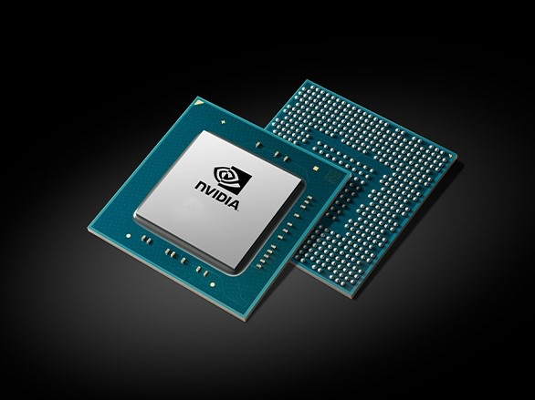
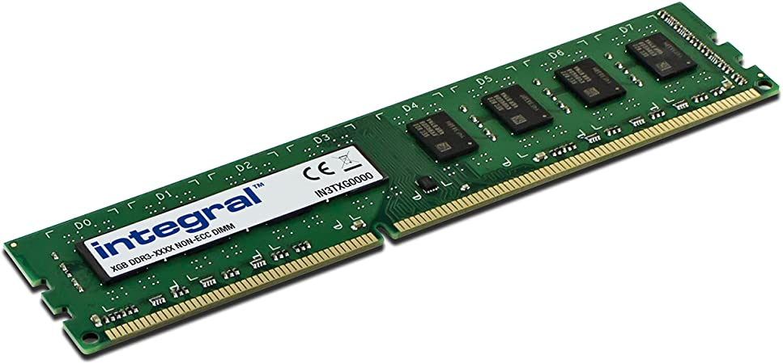
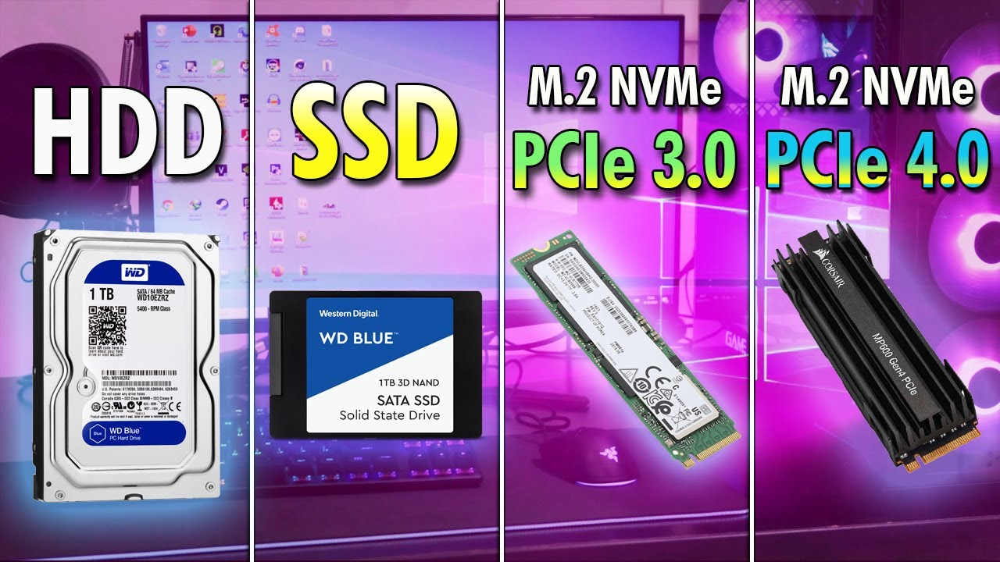
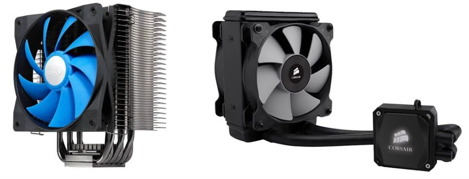
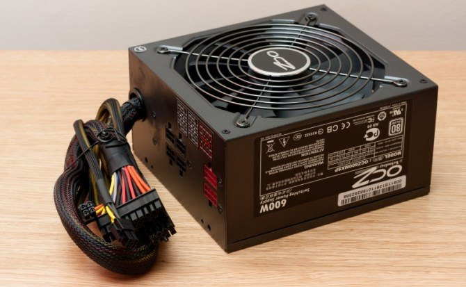

Montaje y desmontaje de ordenadores
¿Qué es un ordenador?
La computadora, también denominada computador u ordenador, es una máquina electrónica digital programable que ejecuta una serie de comandos para procesar los datos de entrada, obteniendo convenientemente información que posteriormente se envía a las unidades de salida.
Componentes de un ordenador
| Caja | Placa base. | CPU | GPU | Memoria RAM | Almacenaje | Disipador | Fuente de poder |
|---|---|---|---|---|---|---|---|
|  |  |  |
 |  |  |  |  |
Enlaces de interés
Cursos interesantes:
- Reparación y Mantenimiento de Ordenadores
- Ingenieria informática
- Curso de montaje y mantenimiento de equipos informáticos